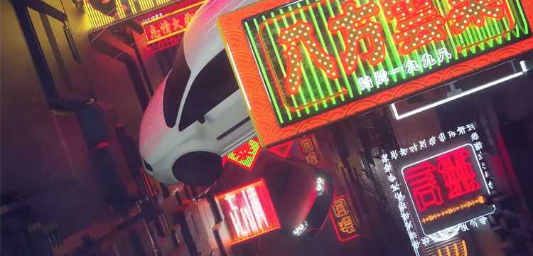

-
TEDxZJU 2018 無界
# Motion Graphic
# 05.2018
缘起 Origin
我很荣幸参与到TEDxZJU2018夏季大会担任主视觉设计师。無界是这次大会的主题，也是我所制作的暖场视频的名字。
“人类的进步，也就是界限的消除。”我们其实很少去思考一些离我们太远的东西，而往往被现状的界限所围困。暖场视频的主角是一个太空人，他属于宇宙，属于一个无界的空间。他见证过界限的消除，所以我希望通过他的视角，来探讨无界的世界究竟是什么样子。I was so honored to participate in the TEDxZJU 2018 Summer Conference as the main visual designer. "Unbounded" is the theme of this conference and the name of my warm-up video as well.
"Human progress is the elimination of boundaries." We rarely think about things that are too far away from us, and are often trapped by the boundaries of the status quo. The main character of this video is an astronaut, who belongs to the universe which is a boundless space. He has witnessed the elimination of boundaries, so I hope to explore what the unbounded world looks like through his perspective.
References
Pause 2017 Opening Titles / No Signal / Emptiness
Credits
Event : TEDxZJU 2018
Producer / Designer / Animator :
Guangxi Cai
Music & Sound : EchoicAudio
Special Thanks :
Xiayin Ying / Shijia Hu / Xueyi Zhou过程 Process
在一个月的时间内独立完成这样一个电影级动画对我来说实在是一个不小的挑战，它需要大量的建模、渲染及合成工作。我使用了一些网络上的免费模型资源，但大部分模型都来源于我自己之前的一些静帧渲染作品。整个影片都有Cinema 4D的Oc渲染器进行制作，并由AE做颜色矫正及后期合成。
It was quite a big challenge for me to independently complete such a film-like video which required lots of modeling, rendering and compositing work. I used some of the free model resources on the web, but most of the models were from my own previous still-frame renderings. The entire video is produced in Cinema 4D with Octane Render and post-synthesis in After Effects.
镜头设计 Lens design
落寞，繁荣，变换，流动，这是我希望通过镜头表达的感受。世界本来就是没有界限的，我想以宇航员的角度去一层一层地分解我们潜意识里的界限。
我选取了世界各地很多具有代表性的地点，并用魔幻现实主义的方式来重新呈现它们。中国重庆的解放碑就是其中的一个代表，高楼耸立的地段中，一些中国古庭院立在房屋之上，我想借此来暗示新兴与落寞的碰撞。Loneliness, prosperity, transformation, flow, these feelings are what I hope to express through the lens. I want to break down our unconscious boundaries layer by layer through an astronaut's perspective.
I selected many representative locations around the world and re-presented them in a magical realism way. The Liberation Monument (aka Jiefangbei) in Chongqing, China, is one of them. Some ancient Chinese courtyards stand on the top of houses around the tall buildings. I want to take this as a hint of the collision between rising and falling.


